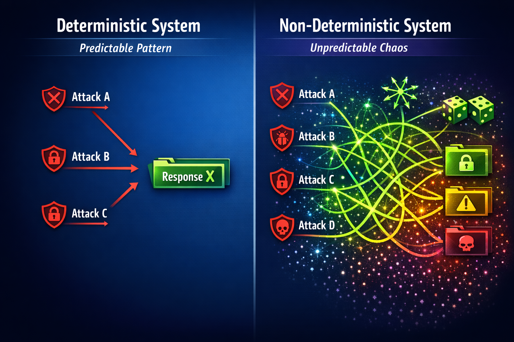
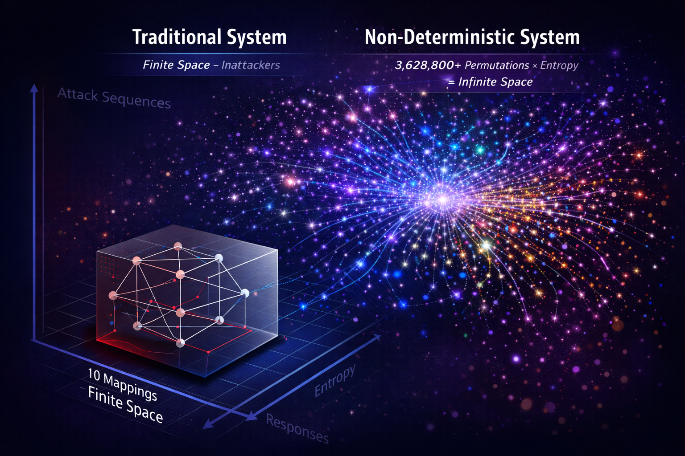
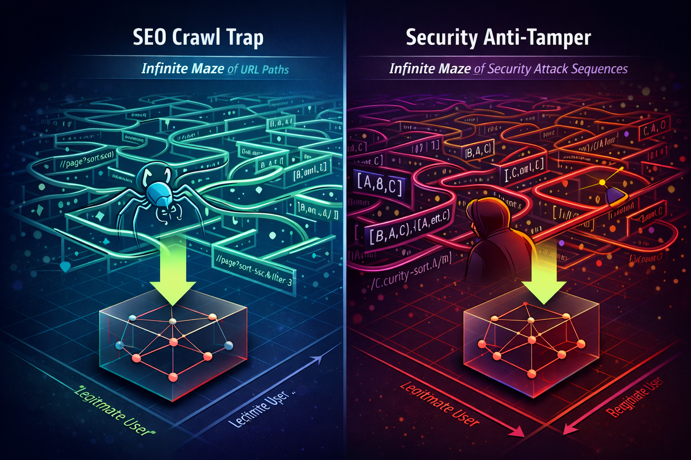
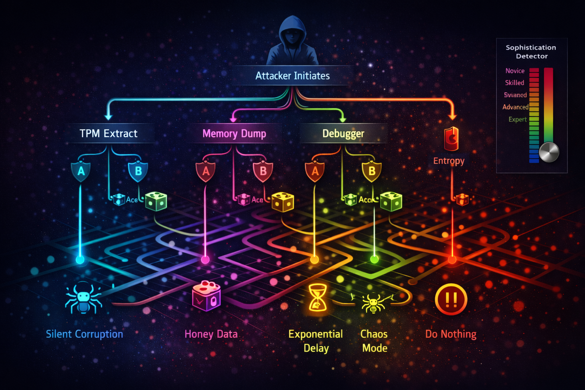

Abstract
Traditional anti-tampering systems employ deterministic responses to detected attacks, creating predictable behavior patterns that sophisticated attackers can map and bypass. This paper introduces a novel non-deterministic anti-tampering framework that generates unpredictable, sequence-dependent responses using entropy-based permutation. By applying principles from chaos theory and drawing parallels to SEO crawl trap methodologies, we demonstrate a defensive security paradigm that becomes exponentially more difficult to reverse engineer as attack attempts increase.
Our approach creates an asymmetric advantage for defenders by making the attack surface effectively infinite while maintaining zero friction for authorized users through hardware-backed device authentication (TPM/Secure Enclave). We present the theoretical framework, implementation architecture, and demonstrate why this approach is fundamentally defensive-only and cannot be weaponized.
Keywords: anti-tampering, non-deterministic security, chaos theory, endpoint protection, TPM, sequence-dependent responses, entropy-based permutation
1. Introduction
1.1 The Problem with Deterministic Security
Modern endpoint security systems face a fundamental challenge: deterministic behavior creates predictable patterns. When an anti-tampering system always responds the same way to the same input, attackers can:
- Map the behavior space through systematic testing
- Identify bypass techniques through pattern recognition
- Develop automated tools to circumvent protections
- Share exploit techniques across the attacker community
Traditional anti-tampering solutions (e.g., Denuvo, VMProtect, Themida) follow this deterministic model:
IF debugger_detected THEN crash_application
IF memory_dump THEN corrupt_specific_bytes
IF tamper_detected THEN display_error_message
This predictability is the Achilles' heel of conventional security.

1.2 The AI Amplification Problem
The emergence of AI-powered attack tools has transformed the threat landscape. What previously required human expertise and time can now be automated and scaled:
Traditional Attack: Human manually attempts 100 bypass techniques over days
AI-Powered Attack: AI attempts 10,000 permutations in minutes, learns patterns, adapts strategy
The "1% edge case" that enterprise security traditionally ignored is now the primary attack vector, infinitely scalable with AI assistance.
1.3 Our Contribution
This paper presents a non-deterministic anti-tampering system with the following novel characteristics:
- Sequence-Dependent Responses: System behavior depends on the order and history of attack attempts
- Entropy-Based Permutation: Multiple entropy sources ensure responses are unpredictable
- Adaptive Sophistication Detection: System adjusts response complexity based on attacker skill level
- Defensive-Only Architecture: System cannot be weaponized due to initiation requirement
- Zero Authorized User Friction: TPM/Secure Enclave binding ensures legitimate users experience no security overhead
2. Related Work
2.1 Moving Target Defense (MTD)
Moving Target Defense strategies dynamically change system configurations to increase uncertainty for attackers. However, MTD systems remain deterministic at any given moment and focus on network/system-level changes rather than application-level protection.
Key Difference: Our approach introduces non-determinism at the response level, not just configuration level.
2.2 Polymorphic Code
Polymorphic malware changes its code signature to evade detection. While conceptually similar, polymorphic techniques are used offensively (by attackers), focused on evasion rather than active defense, and still deterministic in behavior.
2.3 Honeypots and Deception Technology
Honeypots create fake systems to waste attacker resources. However, honeypots are static and separate from production systems, easily identified once discovered, and not integrated into data protection.
2.4 Traditional Anti-Tampering
Commercial anti-tampering solutions (Denuvo, VMProtect) provide obfuscation and integrity checking but remain fundamentally deterministic. Attackers can map behavior through systematic testing, share bypass techniques, and develop automated cracking tools.
3. Theoretical Framework
3.1 Chaos Theory in Security
Chaos theory studies systems where small changes in initial conditions lead to vastly different outcomes. We apply three key principles:
1. Sensitive Dependence on Initial Conditions
Attack sequence order dramatically changes response. Timing of attacks affects outcome. System state influences behavior.
2. Deterministic Chaos
System is deterministic (reproducible with exact conditions) but appears random to external observer. Prediction requires perfect knowledge of all variables.
3. Strange Attractors
System behavior clusters around certain patterns but never repeats exactly. Creates appearance of structure without predictability.
3.2 The Entropy Mixing Function
Our system combines multiple entropy sources to generate unpredictable responses:
Response = H(
AttackSequence,
DeviceFingerprint,
Timestamp,
AttemptCount,
SystemState,
EnvironmentalEntropy
)
Where:
├─ AttackSequence: Ordered list of attack types and timing
├─ DeviceFingerprint: TPM-derived unique device identifier
├─ Timestamp: High-resolution time of attack
├─ AttemptCount: Number of previous attempts
├─ SystemState: CPU temp, memory pressure, network latency
└─ EnvironmentalEntropy: Additional random sources
3.3 Sequence-Dependent State Machine
Unlike traditional state machines with fixed transitions, our system maintains attack history:
State(t) = f(State(t-1), Attack(t), Entropy(t))
Response(t) = g(State(t), AttackHistory, Entropy(t))
This creates a path-dependent system where:
- Same attack at different times → different response
- Different attack order → different response
- Same sequence at different times → different response
3.4 The Permutation Space
With N attack types and M possible responses:
Traditional system: N → M mappings (finite, mappable)
Our system: N! × E → M mappings (effectively infinite)
Where E represents entropy space (continuous, unbounded).
Example: With 10 attack types:
- Traditional: 10 mappings
- Our system: 10! = 3,628,800 sequence permutations × entropy = unmappable

4. The SEO Crawl Trap Analogy
To make this concept accessible to security practitioners, we draw a parallel to SEO crawl traps—a well-understood technique in web security.
4.1 SEO Crawl Traps Explained
SEO crawl traps create infinite URL permutations to waste crawler resources:
/page?sort=asc&filter=1&page=1
/page?sort=desc&filter=1&page=1
/page?sort=asc&filter=2&page=1
/page?filter=1&sort=asc&page=1
... (infinite combinations)
Characteristics:
- Parameter permutations create vast space
- Each URL appears unique
- Crawler cannot map entire space
- Legitimate users unaffected (use normal links)
4.2 Security Crawl Traps
Our anti-tampering system applies the same principle:
Attack Sequence [A, B, C] → Response X
Attack Sequence [A, C, B] → Response Y
Attack Sequence [B, A, C] → Response Z
Attack Sequence [B, C, A] → Response W
... (infinite permutations with entropy)
4.3 The Parallel
| SEO Crawl Trap |
Security Anti-Tamper |
| Parameter permutations |
Attack sequence permutations |
| Wastes crawler resources |
Wastes attacker resources |
| Protects real content |
Protects real data |
| Legitimate users unaffected |
Authorized devices unaffected |
| Infinite URL space |
Infinite response space |
Key Insight: If crawl traps work for SEO, sequence-dependent responses work for security.

5. System Architecture
5.1 Core Components
┌─────────────────────────────────────────────────────┐
│ Non-Deterministic Anti-Tamper System │
├─────────────────────────────────────────────────────┤
│ │
│ ┌────────────────────────────────────────────┐ │
│ │ Attack Detection Layer │ │
│ │ • TPM monitoring │ │
│ │ • Memory access patterns │ │
│ │ • Debugger detection │ │
│ │ • Network behavior analysis │ │
│ └────────────────────────────────────────────┘ │
│ ↓ │
│ ┌────────────────────────────────────────────┐ │
│ │ Sequence Tracker │ │
│ │ • Attack history graph │ │
│ │ • Temporal analysis │ │
│ │ • Pattern recognition │ │
│ └────────────────────────────────────────────┘ │
│ ↓ │
│ ┌────────────────────────────────────────────┐ │
│ │ Entropy Mixer │ │
│ │ • Device fingerprint │ │
│ │ • System state │ │
│ │ • Environmental entropy │ │
│ └────────────────────────────────────────────┘ │
│ ↓ │
│ ┌────────────────────────────────────────────┐ │
│ │ Response Generator │ │
│ │ • Permutation engine │ │
│ │ • Sophistication detection │ │
│ │ • Opposite day strategy │ │
│ └────────────────────────────────────────────┘ │
│ ↓ │
│ ┌────────────────────────────────────────────┐ │
│ │ Execution Layer │ │
│ │ • Silent corruption │ │
│ │ • Honey data injection │ │
│ │ • Exponential delays │ │
│ │ • Forensic logging │ │
│ └────────────────────────────────────────────┘ │
│ │
└─────────────────────────────────────────────────────┘
5.2 Attack Vector Detection
The system monitors for common tampering attempts:
enum AttackVector {
case tpmExtraction // Attempting to extract TPM keys
case memoryDump // Dumping process memory
case debuggerAttach // Attaching debugger
case fileSystemMonitor // Monitoring file access patterns
case networkSniffing // Packet capture attempts
case credentialTheft // Stolen credentials detected
case deviceCloning // Cloned device signature
case bruteForceDecrypt // Brute force decryption
case reverseEngineering // Disassembly/decompilation
case timeManipulation // System clock tampering
}
5.3 Response Strategies
The system can execute various responses based on permutation:
enum ResponseStrategy {
case silentCorruption // Subtly corrupt data
case honeyData // Feed fake but plausible data
case exponentialDelay // Increase delay exponentially
case selfDestruct // Delete protected files
case alertAndLock // Alert user, lock system
case chaosMode // Random corruption patterns
case forensicLog // Detailed logging for prosecution
case doNothing // Most confusing - no response
}
5.4 The Opposite Day Strategy
A key innovation is the "opposite day" strategy where the system sometimes:
- Does what attacker expects (20% of time)
- Does the opposite (20% of time)
- Does something random (20% of time)
- Does nothing (20% of time)
- Does everything at once (20% of time)
Result: Attackers cannot build reliable mental models of system behavior.

6. Security Analysis
6.1 Threat Model
Assumptions:
- Attacker has valid credentials (stolen or insider)
- Attacker has physical or remote access to endpoint
- Attacker has sophisticated tools and knowledge
- Attacker can attempt unlimited attacks
- Attacker can observe system responses
Out of Scope:
- Hardware tampering (addressed by TPM)
- Supply chain attacks (separate concern)
- Social engineering (orthogonal issue)
6.2 Attack Surface Analysis
Traditional Deterministic System:
├─ Attack Surface = N attack vectors
├─ Mapping Effort = N attempts
└─ Success Probability = High (patterns learnable)
Our Non-Deterministic System:
├─ Attack Surface = N! × E (effectively infinite)
├─ Mapping Effort = Impossible (entropy prevents mapping)
└─ Success Probability = Negligible (no patterns to learn)
6.3 Why This Cannot Be Weaponized
Initiation Requirement: System only responds to attacks ON the protected system. Cannot initiate attacks on other systems. Purely reactive, never proactive.
No Autonomous Decision-Making: All responses are predefined strategies. No learning or adaptation beyond detection. No capability to harm external systems.
Data Protection Only: System protects files, not controls weapons. Cannot interact with physical systems. Limited to encryption and logging.
Defensive Architecture: Even if attacker steals the code, they can only use it to protect their own data. Cannot weaponize against original user. Asymmetric advantage remains with defender.
6.4 Comparison to Existing Solutions
| Feature |
Traditional DLP |
Moving Target Defense |
Our System |
| Response Type |
Deterministic |
Deterministic (at moment) |
Non-deterministic |
| Mappable |
Yes |
Partially |
No |
| Sequence-Aware |
No |
No |
Yes |
| Entropy-Based |
No |
No |
Yes |
| TPM-Bound |
No |
No |
Yes |
| Zero User Friction |
No |
No |
Yes |
| AI-Resistant |
No |
Partially |
Yes |
7. Conclusion
We have presented a novel non-deterministic anti-tampering system that fundamentally changes the economics of attacking protected endpoints. By applying chaos theory principles and drawing inspiration from SEO crawl traps, we create an effectively infinite attack surface that cannot be mapped or predicted.
Key Contributions:
- Sequence-dependent response framework
- Entropy-based permutation engine
- Adaptive sophistication detection
- Defensive-only architecture
- Zero authorized user friction via TPM binding
Practical Impact:
- Makes systematic attack mapping impossible
- Wastes attacker resources exponentially
- Provides forensic evidence for prosecution
- Maintains seamless user experience
- Cannot be weaponized due to reactive nature
Broader Implications: This work demonstrates that security need not be a trade-off with usability. By leveraging hardware-backed authentication (TPM/Secure Enclave) and non-deterministic responses, we achieve both strong security and zero user friction—a combination previously thought impossible.
The emergence of AI-powered attacks makes this approach not just novel, but necessary. As attackers gain the ability to automate and scale their efforts infinitely, defenders must adopt strategies that make such automation futile. Non-deterministic security provides exactly this capability.
8. Citation
If you use this work, please cite:
@article{omori2026nondeterministic,
title={Non-Deterministic Anti-Tampering:
Applying Chaos Theory to Endpoint Security},
author={Omori, Hana},
journal={arXiv preprint},
year={2026},
url={https://github.com/aimarketingflow/non-deterministic-chaos-defense-whitepaper}
}